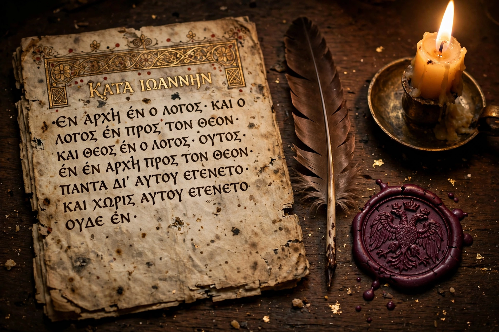

For the general concept, see secret history (genre). For other uses, see Secret History (disambiguation).

| Author | Procopius of Caesarea |
|---|---|
| Written | c. 550 AD (disputed) |
| Language | Medieval Greek |
| Subject | Reign of Justinian I and Theodora |
| First published | 1623, Lyon (ed. Niccolò Alemanni) |
The Secret History (Greek: Ἀνέκδοτα, Anekdota, "unpublished [writings]"), also known as the Arcana Historia, is a work by the Byzantine historian Procopius of Caesarea, written in about 550 AD but not published in his lifetime. In it, Procopius — the official historian of the wars of the emperor Justinian I and the panegyrist of Justinian's building program — presents a venomous counter-narrative of the reign: Justinian is portrayed as a cruel, incompetent, and possibly demonic tyrant; his wife Theodora as a former actress and prostitute of insatiable appetite and vindictive temper; the general Belisarius as a cuckolded fool dominated by his wife Antonina, Theodora's friend and accomplice.
The work falls into three broad parts. The first (chapters 1–5) narrates the private scandals of Belisarius and Antonina, including Antonina's affair with the young Thracian Theodosius. The second (chapters 6–18) turns to Justinian and Theodora: Theodora's career on the stage and in the brothels of Constantinople, the couple's persecution of officials and confiscation of aristocratic fortunes, Justinian's fiscal rapacity, and the claim — presented as reportage of what courtiers believed — that the emperor was a demon in human form, whose head was seen to vanish at night and whose face dissolved into featureless flesh. The third part (chapters 19–30) catalogues the regime's financial, administrative, and military misgovernment, blaming Justinian's wars and tax policies for depopulating the empire: Procopius reckons the reign's victims in "myriads of myriads".
Procopius states in his preface that he could not record the true causes of events in his published Wars while the actors still lived, and that he now supplies what fear had suppressed. The work was evidently circulated, if at all, only among trusted readers; it was known to the 10th-century Suda lexicon, which mentions the Anekdota as a book of invective against Justinian, Theodora, Belisarius, and Antonina. It remained effectively unknown in the West until the Vatican librarian Niccolò Alemanni published the Greek text with a Latin translation in 1623, from a manuscript in the Vatican Library.
Procopius's authorship, once doubted because of the work's startling contrast with the loyal Wars and the adulatory Buildings, is now generally accepted on stylistic and internal grounds. Interpretations of the Secret History differ sharply. An older scholarship took it as the historian's sincere private verdict — the truth behind the propaganda. More recent readers stress the conventions of classical invective (psogos), the literary pairing of official praise and private blame, and the possibility that Procopius wrote as a "safety valve" for senatorial-class resentment without every charge being reportorial fact. Historians mine the work cautiously: its checkable administrative details are often accurate, while its sexual and demonic scandals are treated as the rhetoric of an embittered insider rather than evidence.
The Secret History permanently colored the reputations of Justinian and Theodora, supplied the lurid core of Gibbon's account of the reign in The Decline and Fall of the Roman Empire, and gave its name to the genre of "secret history" — the hidden, scandalous truth behind official narratives — a term Procopius's title helped popularize in modern usage.